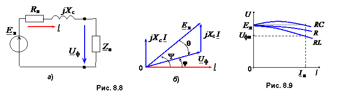

8.3.2. Внешняя характеристика генератора
Внешняя характеристика Uф = f(I) – зависимость фазного напряжения генератора от тока нагрузки при постоянной частоте вращения (n = const) ротора, неизменном токе возбуждения (Iв = const) и коэффициенте мощности нагрузки (cosφ = const). Напряжение Uф на зажимах фазной обмотки якоря, схема замещения которой приведена на рис. 8.8а, зависит от индуктируемой в ней магнитным потоком Фр результирующей ЭДС Eя и падений напряжений в активном сопротивлении Rя и в так называемой синхронном индуктивном сопротивлении Хс, т.е.
Uф = Eя – RяI – jXcI. (8.3)
Uф = Eя – RяI – jXcI. (8.3)
В синхронных машинах обычно Rя << Xc. Пренебрегая падением напряжения RяI, получим упрощенное уравнение электрического состояния фазы синхронного генератора
Uф = Eя – jXcI.
(8.4)
Этому уравнению соответствует упрощенная векторная диаграмма (рис. 8.8б) для активно-индуктивной нагрузки Zн. Построение векторной диаграммы удобнее начать с вектора тока I, затем под углом φ провести вектор напряжения Uф. Вектор jXcI опережает по фазе вектор тока I на угол π/2. Вектор ЭДС Eя определяется геометрическим сложением векторов Uф и jXcI. Как видно из диаграммы, в режиме генератора вектор ЭДС Eя больше вектора напряжения Uф и опережает его по фазе на угол Θ.

Таким образом, напряжение на зажимах генератора, работающего в автономном режиме (на строительной площадке, в сельской местности, на морских и речных судах и т. д.), зависит от тока и характера нагрузки.
На рис. 8.9 построены внешние характеристики синхронного генератора при n0 = const и различных нагрузках: активно-ёмкостной RC, активной R и активно-индуктивной RL.
Вследствие большой величины внутреннего сопротивления Xс генератора и ослабления магнитного потока Фв (за счёт размагничивающего действия реакции якоря при активно-индуктивной нагрузке) происходит уменьшение напряжения Uф (при номинальном токе нагрузки Iн падение напряжения Uф достигает 25-35%). Однако при активно-емкостной нагрузке с увеличеникм тока I напряжение Uф увеличивается. Это связано с подмагничивающим действием реакции якоря при ёмкостном характере нагрузки.